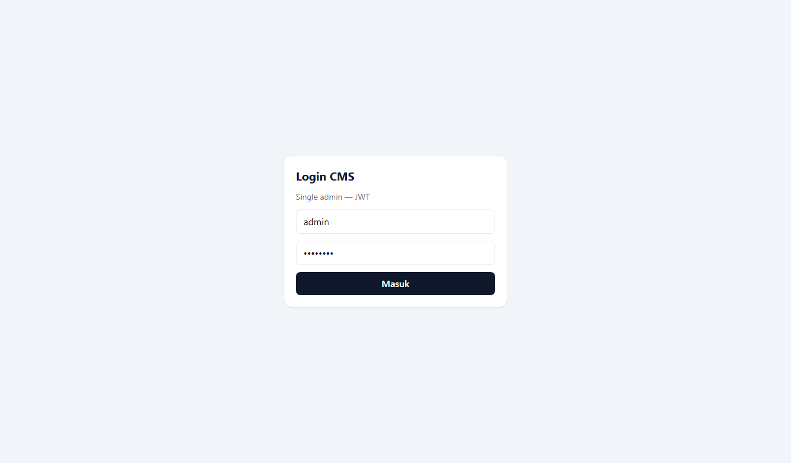
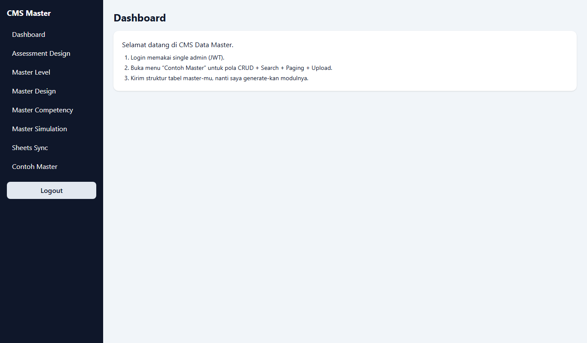
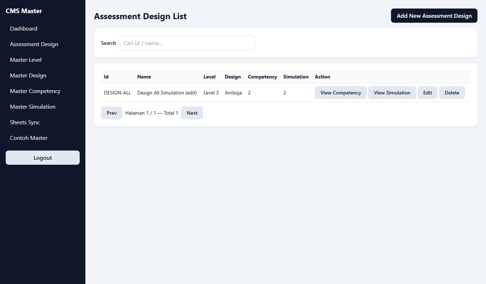
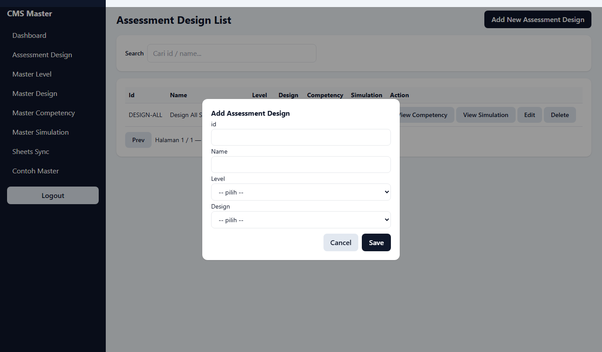
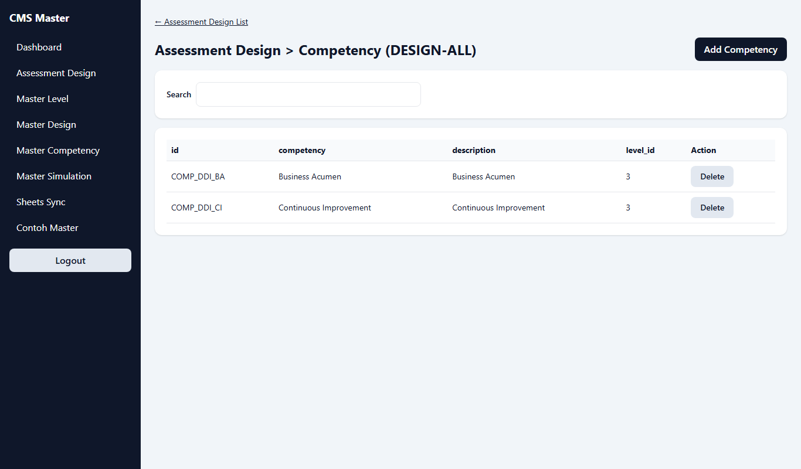
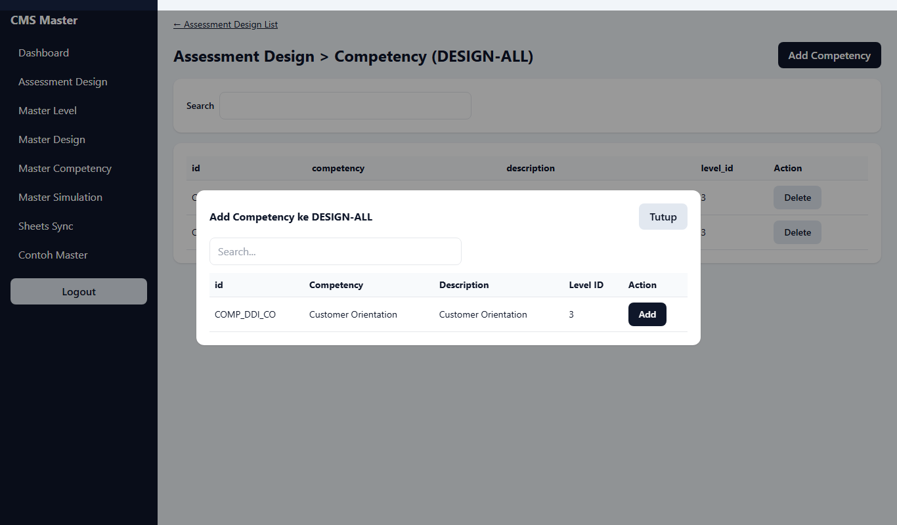
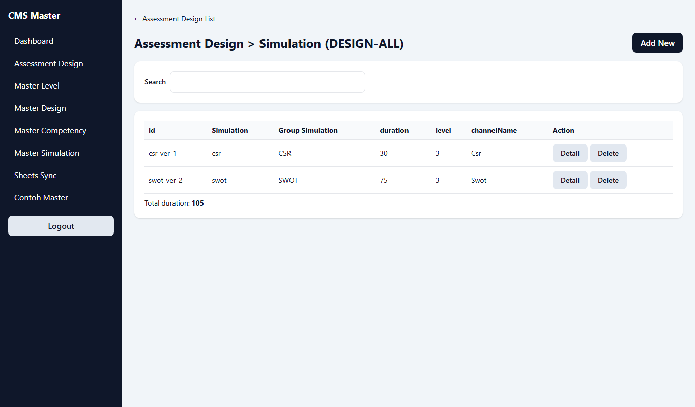
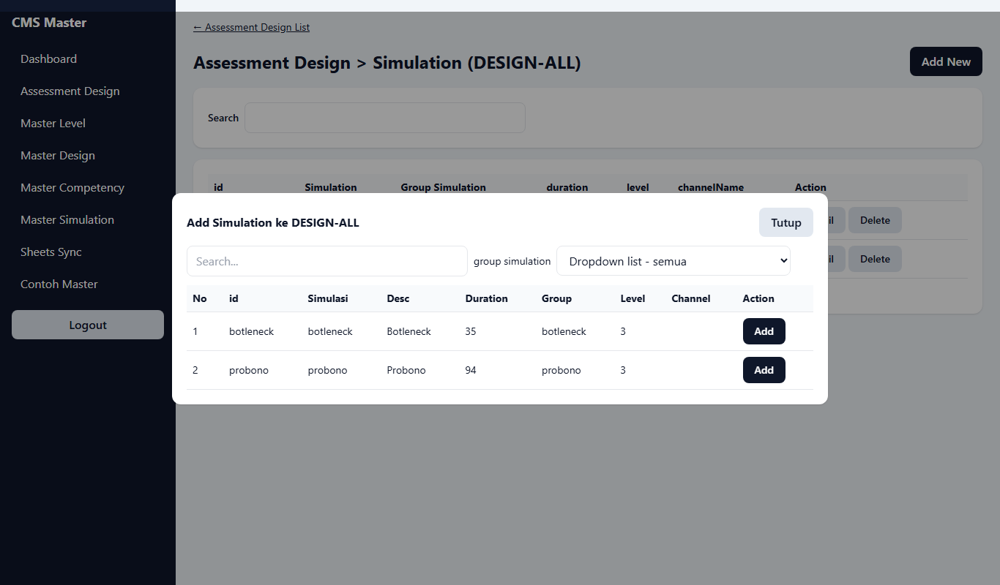
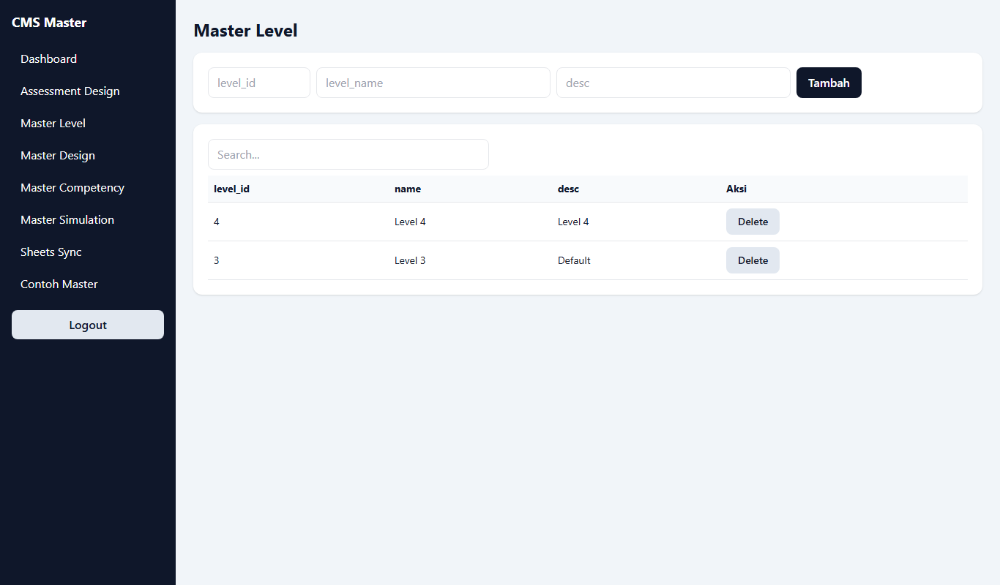
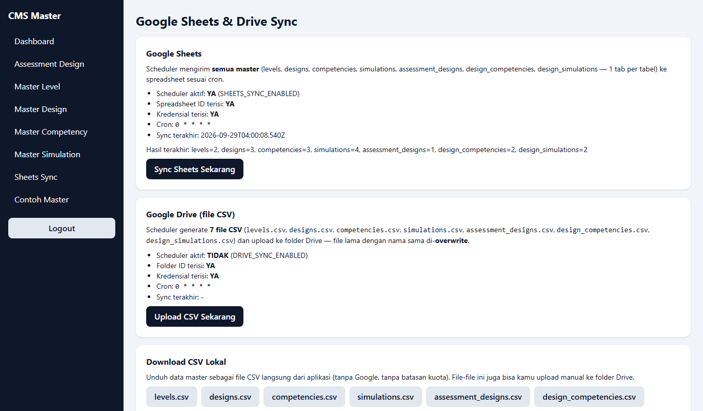

Panduan Pengguna
CMS Data Master
Modul Master Assessment Design
Untuk pengguna awam — dilengkapi gambar langkah demi langkah
September 2026
1. Membuka Aplikasi dan Login
- Pastikan server sudah dinyalakan (lihat PANDUAN-MENJALANKAN.md).
- Buka browser (Chrome / Edge) lalu ketik alamat:
http://localhost:3000/login
- Isi Username dengan
admin dan Password dengan admin123, lalu klik tombol Masuk.

2. Tampilan Utama (Dashboard)
Setelah login kamu masuk ke Dashboard. Menu di sebelah kiri:
- Assessment Design — daftar rancangan assessment (menu utama).
- Master Level / Design / Competency / Simulation — data pendukung untuk mengisi pilihan (dropdown).
- Sheets Sync — kirim data ke Google Sheets & unduh CSV.
- Logout — keluar dari aplikasi. Selalu klik ini setelah selesai.

3. Melihat Daftar Assessment Design
Klik menu Assessment Design. Setiap baris menampilkan Id, Name, Level, Design, jumlah Competency, jumlah Simulation, dan tombol aksi.
- Search — ketik id/nama untuk mencari, hasil tersaring otomatis.
- Prev / Next — pindah halaman jika datanya banyak.
- View Competency — lihat daftar competency milik design ini.
- View Simulation — lihat daftar simulation milik design ini.
- Edit — ubah nama/level/design. Delete — hapus (ada konfirmasi dulu).

4. Menambah Assessment Design Baru
- Di halaman Assessment Design List, klik tombol hitam Add New Assessment Design di kanan atas.
- Isi id (kode unik, misal
10002 — tidak boleh sama dengan yang sudah ada).
- Isi Name (nama design, misal
DESIGN B).
- Pilih Level dan Design dari daftar pilihan.
- Klik Save untuk menyimpan, atau Cancel untuk batal.

Tips: Jika pilihan Level/Design kosong, isi dulu lewat menu Master Level dan Master Design (lihat Bab 7).
5. Mengelola Competency Milik Design
5.1 Melihat daftar
Dari Assessment Design List, klik View Competency pada baris yang diinginkan. Tabel menampilkan id, nama competency, description, dan level.

5.2 Menambah competency
- Klik tombol Add Competency di kanan atas.
- Cari competency lewat kolom Search bila perlu.
- Klik tombol Add pada baris yang diinginkan. Data yang sudah ada tidak muncul lagi di daftar ini.
- Klik Tutup jika selesai.

5.3 Menghapus
Klik tombol Delete lalu jawab OK pada konfirmasi. Data master competency-nya tidak ikut terhapus — hanya dilepas dari design ini.
6. Mengelola Simulation Milik Design
6.1 Melihat daftar
Dari Assessment Design List, klik View Simulation. Tabel menampilkan id, nama simulation, group, duration (menit), level, dan channel. Di bawah tabel ada Total duration (jumlah menit semua simulation).

6.2 Menambah simulation
- Klik tombol Add New di kanan atas.
- Saring lewat kolom Search atau dropdown group simulation.
- Klik tombol Add pada baris yang diinginkan, lalu Tutup.

6.3 Detail & hapus
Tombol Detail menampilkan isi lengkap satu simulation. Tombol Delete melepas simulation dari design (ada konfirmasi).
7. Mengisi Data Master Pendukung
Menu Master Level, Master Design, Master Competency, Master Simulation cara pakainya sama semua:
- Isi form pendek di kartu atas, klik Tambah.
- Cari data lewat kolom Search.
- Hapus dengan tombol Delete (ada konfirmasi).
Contoh tampilan Master Level:

Catatan untuk Master Simulation: isi duration dalam menit (angka), karena dipakai menghitung Total duration di Bab 6.
8. Kirim ke Google Sheets & Unduh CSV
Buka menu Sheets Sync. Halaman ini berisi:
- Status scheduler Sheets (aktif/tidak, jadwal, sync terakhir).
- Tombol Sync Sheets Sekarang — mengirim semua master ke spreadsheet Google (7 tab: levels, designs, competencies, simulations, assessment_designs, design_competencies, design_simulations).
- Tombol Upload CSV Sekarang — hanya berfungsi bila admin mengaktifkan fitur Drive (saat ini nonaktif, lihat catatan di bawah).
- Tombol levels.csv, designs.csv, … — mengunduh data sebagai file CSV langsung ke komputermu. File ini bisa dibuka di Excel atau di-upload manual ke Google Drive.

Catatan: Upload otomatis ke Google Drive saat ini dimatikan karena aturan Google (akun service tidak punya kuota penyimpanan). Gunakan tombol download CSV, lalu upload manual ke Drive bila perlu.
9. Selesai Memakai & Masalah Umum
Keluar aplikasi
Klik Logout di menu kiri setelah selesai, apalagi di komputer bersama.
Masalah yang sering terjadi
| Gejala | Yang dilakukan |
|---|
| Halaman tidak bisa dibuka / "tidak dapat menjangkau situs" | Server belum dinyalakan. Ikuti PANDUAN-MENJALANKAN.md (backend dulu, baru frontend). |
| Username/password ditolak berulang | Lempar kembali (logout) lalu login ulang. Jika tetap gagal, hubungi admin — mungkin database di-reset dan perlu seed ulang. |
| Pilihan Level/Design kosong saat tambah data | Isi dulu lewat menu Master Level / Master Design (Bab 7). |
| Tombol Add tidak muncul di picker | Artinya data itu sudah ada di design — daftar picker hanya menampilkan yang belum ditambahkan. |
| File CSV berantakan saat dibuka di Excel | Saat import, pilih encoding UTF-8 dan pemisah koma. File dari aplikasi sudah berformat UTF-8 dengan BOM. |